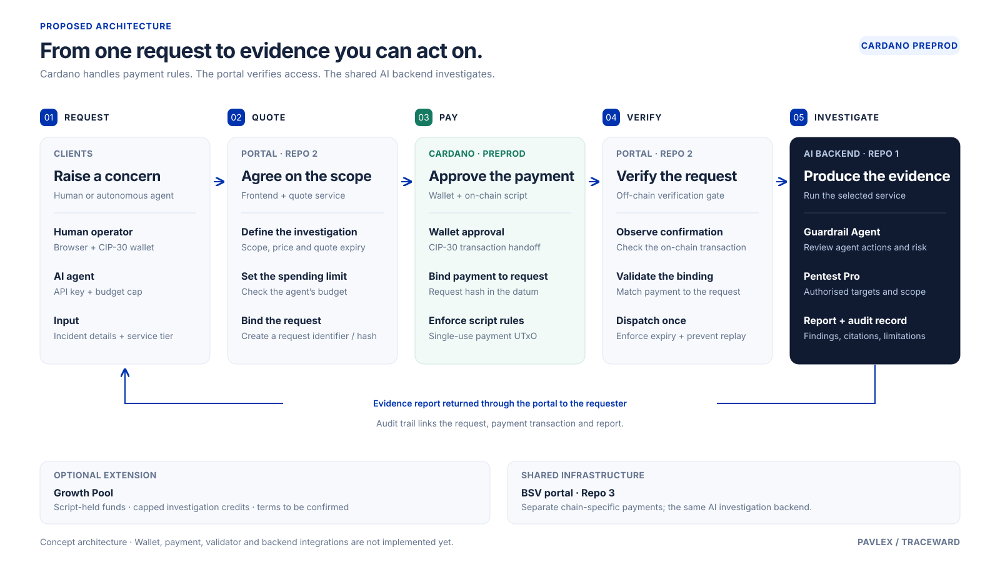

How the system fits together
Request lifecycle · service boundaries · payment verification

Scroll horizontally to explore all five stages, or open the full diagram.

Proposed design · Cardano preprod · Integrations pending implementationView Mermaid source ↗